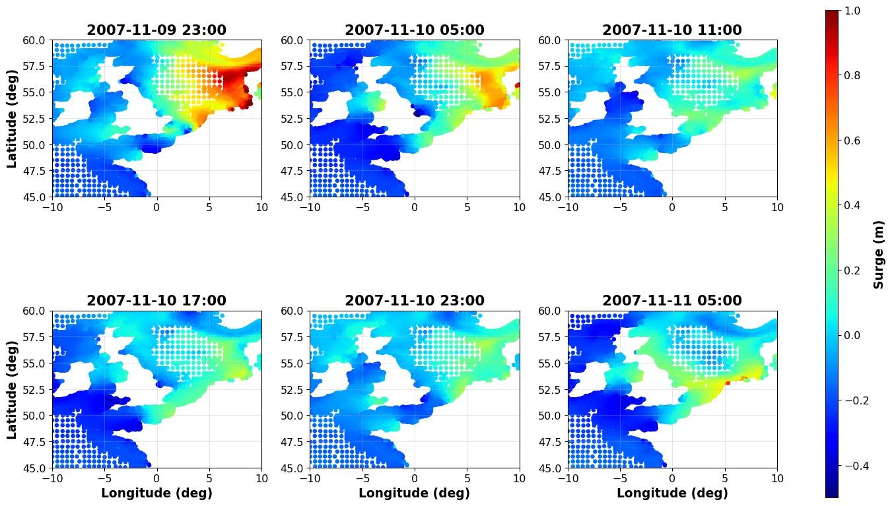

This document provides spatial analysis of surge patterns and meteorological conditions for Storm 8 (closure event index 11), Storm 18 (closure event index 23, 2007), and Storm 19 (closure event index 24) for the Eastern Scheldt, converting the MATLAB script master6.m to Python. The analysis:
Loads barrier closure dates to identify the storm events
Loads GTSM reanalysis surge data (spatial surge patterns) for each storm
Loads ERA5 meteorological reanalysis data (pressure and wind fields) for each storm
Creates multiple visualizations for each storm:
GTSM surge maps at 6 time steps around the closure
ERA5 meteorological maps (pressure + wind vectors) at 6 time steps
This provides a comprehensive view of the spatial patterns and meteorological conditions that led to the barrier closures for Storms 8, 18, and 19.
import numpy as npimport pandas as pdimport pickleimport matplotlib.pyplot as pltfrom datetime import datetime, timedeltaimport xarray as xrimport osimport cartopy.crs as ccrsimport cartopy.feature as cfeature# Configurationtint =6# Time interval for GTSM plots (hours)tint_met =12# Time interval for meteorological plots (hours)output_dir ='output'data_dir ='../2_DATA'# Spatial boundsxb_gtsm = [-10, 10] # GTSM longitude boundsyb_gtsm = [45, 60] # GTSM latitude boundsxb_met = [-30, 15] # ERA5 longitude boundsyb_met = [40, 70] # ERA5 latitude boundsos.makedirs(output_dir, exist_ok=True)print(f"Analysis configuration:")print(f" Storms to process: Storm 8 (e=11, prefix '8_'), Storm 18 (e=23, prefix '18_'), and Storm 19 (e=24, prefix '19_')")print(f" GTSM time interval: {tint} hours")print(f" Meteorological time interval: {tint_met} hours")print(f" Output directory: {output_dir}")
Analysis configuration:
Storms to process: Storm 8 (e=11, prefix '8_'), Storm 18 (e=23, prefix '18_'), and Storm 19 (e=24, prefix '19_')
GTSM time interval: 6 hours
Meteorological time interval: 12 hours
Output directory: output
# Load barrier closure data from master1print("Loading barrier closure data...")mast1_file = os.path.join(output_dir, 'mast1.pkl')ifnot os.path.exists(mast1_file):raiseFileNotFoundError(f"Required file {mast1_file} not found. ""Please run master1.qmd first to generate the required data file." )withopen(mast1_file, 'rb') as f: data1 = pickle.load(f) OCD = data1['OCD'] # Observed closure dates# Convert to numpy array if neededOCD = np.array(OCD)# Validate event indices for all stormse_storm8 =11e_storm18 =23e_storm19 =24if e_storm8 >=len(OCD):raiseValueError(f"Event index {e_storm8} (Storm 8) is out of range. There are {len(OCD)} closure events (indices 0-{len(OCD)-1})")if e_storm18 >=len(OCD):raiseValueError(f"Event index {e_storm18} (Storm 18) is out of range. There are {len(OCD)} closure events (indices 0-{len(OCD)-1})")if e_storm19 >=len(OCD):raiseValueError(f"Event index {e_storm19} (Storm 19) is out of range. There are {len(OCD)} closure events (indices 0-{len(OCD)-1})")print(f"\nData loaded:")print(f" Total closure dates: {len(OCD)} closures")print(f" Storm 8 closure date: {OCD[e_storm8]}")print(f" Storm 18 closure date: {OCD[e_storm18]}")print(f" Storm 19 closure date: {OCD[e_storm19]}")
Storm 8 corresponds to closure event index 11 (0-indexed) and uses datasets with prefix “8_” in the 2_DATA directory.
# Storm 8 configuratione =11# Closure event index (0-indexed, so e=11 means Storm 8)storm_num =8prefix ='8_'closure_date = OCD[e]gtsm_start_date = closure_date # Start date for GTSM plots (use closure date)met_start_date = closure_date - timedelta(hours=6) # Start date for meteorological plotsprint(f"\n{'='*60}")print(f"Processing Storm {storm_num} (event index {e}, prefix: {prefix})")print(f"{'='*60}")print(f" Closure date: {closure_date}")# Load GTSM reanalysis surge datafile_in = os.path.join(data_dir, '3_CODEC_GTSM', f'{prefix}reanalysis_surge_hourly_1992_11_v3.nc')print(f"\nLoading GTSM data from: {file_in}")ds_gtsm = xr.open_dataset(file_in)# Extract dataTS_GT = pd.to_datetime(ds_gtsm['time'].values)X_GT = ds_gtsm['station_x_coordinate'].valuesY_GT = ds_gtsm['station_y_coordinate'].valuesSU_GT = ds_gtsm['surge'].values# Filter to spatial boundsmask = (X_GT >= xb_gtsm[0]) & (X_GT <= xb_gtsm[1]) & (Y_GT >= yb_gtsm[0]) & (Y_GT <= yb_gtsm[1])X_GT = X_GT[mask]Y_GT = Y_GT[mask]SU_GT = SU_GT[:, mask] # Index stations (second axis), not time (first axis)print(f" GTSM data loaded:")print(f" Time points: {len(TS_GT)}")print(f" Stations: {len(X_GT)}")print(f" Time range: {TS_GT[0]} to {TS_GT[-1]}")
============================================================
Processing Storm 8 (event index 11, prefix: 8_)
============================================================
Closure date: 1992-11-11 13:40:00
Loading GTSM data from: ../2_DATA/3_CODEC_GTSM/8_reanalysis_surge_hourly_1992_11_v3.nc
GTSM data loaded:
Time points: 720
Stations: 3873
Time range: 1992-11-01 00:00:00 to 1992-11-30 23:00:00
# Load ERA5 meteorological datafilein_met = os.path.join(data_dir, '4_ERA5', f'{prefix}ERA5_1992_11.nc')print(f"\nLoading ERA5 data from: {filein_met}")ds_met = xr.open_dataset(filein_met)# Extract dataLON = ds_met['longitude'].valuesLAT = ds_met['latitude'].valuesP_MET = ds_met['msl'].values # Mean sea level pressureU_MET = ds_met['u10'].values # 10m u-wind componentV_MET = ds_met['v10'].values # 10m v-wind componentTS_MET = pd.to_datetime(ds_met['valid_time'].values)# Check and handle dimension order - ERA5 typically has (time, lat, lon) or (time, lon, lat)# We need to ensure arrays are in (lon, lat, time) order for consistent indexingprint(f" Original array shapes:")print(f" P_MET: {P_MET.shape}")print(f" U_MET: {U_MET.shape}")print(f" V_MET: {V_MET.shape}")# Get dimension names to determine orderdims = ds_met['msl'].dimsprint(f" Dimension order: {dims}")# Reorder to (lon, lat, time) if needediflen(P_MET.shape) ==3:# Check if time dimension is first (could be 'time' or 'valid_time')if'time'in dims[0].lower() or dims[0] =='valid_time':# If time is first, transpose to (lon, lat, time) or (lat, lon, time)if dims[1] =='latitude'and dims[2] =='longitude':# (time, lat, lon) -> (lon, lat, time) P_MET = np.transpose(P_MET, (2, 1, 0)) U_MET = np.transpose(U_MET, (2, 1, 0)) V_MET = np.transpose(V_MET, (2, 1, 0))elif dims[1] =='longitude'and dims[2] =='latitude':# (time, lon, lat) -> (lon, lat, time) P_MET = np.transpose(P_MET, (1, 2, 0)) U_MET = np.transpose(U_MET, (1, 2, 0)) V_MET = np.transpose(V_MET, (1, 2, 0))elif'time'in dims[2].lower() or dims[2] =='valid_time':# Already in (lon, lat, time) or (lat, lon, time) orderif dims[0] =='latitude'and dims[1] =='longitude':# (lat, lon, time) -> (lon, lat, time) P_MET = np.transpose(P_MET, (1, 0, 2)) U_MET = np.transpose(U_MET, (1, 0, 2)) V_MET = np.transpose(V_MET, (1, 0, 2))print(f" After reordering:")print(f" P_MET: {P_MET.shape} (should be lon x lat x time)")# Create meshgridX_MET, Y_MET = np.meshgrid(LON, LAT)X_MET = X_MET.TY_MET = Y_MET.T# Filter to spatial bounds (for display)lon_mask = (LON >= xb_met[0]) & (LON <= xb_met[1])lat_mask = (LAT >= yb_met[0]) & (LAT <= yb_met[1])lon_idx = np.where(lon_mask)[0]lat_idx = np.where(lat_mask)[0]print(f" ERA5 data loaded:")print(f" Time points: {len(TS_MET)}")print(f" Grid: {len(LON)} x {len(LAT)}")print(f" Time range: {TS_MET[0]} to {TS_MET[-1]}")print(f" P_MET final shape: {P_MET.shape} (lon x lat x time)")
Loading ERA5 data from: ../2_DATA/4_ERA5/8_ERA5_1992_11.nc
Original array shapes:
P_MET: (720, 121, 181)
U_MET: (720, 121, 181)
V_MET: (720, 121, 181)
Dimension order: ('valid_time', 'latitude', 'longitude')
After reordering:
P_MET: (181, 121, 720) (should be lon x lat x time)
ERA5 data loaded:
Time points: 720
Grid: 181 x 121
Time range: 1992-11-01 00:00:00 to 1992-11-30 23:00:00
P_MET final shape: (181, 121, 720) (lon x lat x time)
# Find time indices for GTSM plots# Find the time in TS_GT closest to the specified start datetime_diffs = np.abs([(t - gtsm_start_date).total_seconds() for t in TS_GT])t_gtsm_base = np.argmin(time_diffs)# Create 6 time steps starting from base time: 0, +tint, +2*tint, +3*tint, +4*tint, +5*tintt_gtsm = [t_gtsm_base, t_gtsm_base + tint, t_gtsm_base + tint*2, t_gtsm_base + tint*3, t_gtsm_base + tint*4, t_gtsm_base + tint*5]t_gtsm = [max(0, min(t, len(TS_GT)-1)) for t in t_gtsm] # Clamp to valid rangeprint(f"\nTime indices for GTSM plots:")print(f" Start date: {gtsm_start_date}")print(f" Base time: {TS_GT[t_gtsm_base]} (index {t_gtsm_base})")for i, t_idx inenumerate(t_gtsm):print(f" Time step {i+1}: {TS_GT[t_idx]} (index {t_idx})")# Find time indices for meteorological plotsmax_time_idx = P_MET.shape[2] -1valid_ts_met = TS_MET[:max_time_idx+1]# Find 6 time steps around the closuretarget_times = [met_start_date + timedelta(hours=h) for h in [0, 12, 24, 36, 48, 60]]t_met = [np.argmin(np.abs([(t - target_time).total_seconds() for t in valid_ts_met])) for target_time in target_times]
Time indices for GTSM plots:
Start date: 1992-11-11 13:40:00
Base time: 1992-11-11 14:00:00 (index 254)
Time step 1: 1992-11-11 14:00:00 (index 254)
Time step 2: 1992-11-11 20:00:00 (index 260)
Time step 3: 1992-11-12 02:00:00 (index 266)
Time step 4: 1992-11-12 08:00:00 (index 272)
Time step 5: 1992-11-12 14:00:00 (index 278)
Time step 6: 1992-11-12 20:00:00 (index 284)
GTSM Surge Maps
import matplotlib.gridspec as gridspecfig = plt.figure(figsize=(16, 10))gs = gridspec.GridSpec(2, 4, width_ratios=[1, 1, 1, 0.06], wspace=0.3, hspace=0.25)axes = [fig.add_subplot(gs[i //3, i %3]) for i inrange(6)]for i, t_idx inenumerate(t_gtsm): ax = axes[i] scatter = ax.scatter(X_GT, Y_GT, c=SU_GT[t_idx, :], cmap='jet', s=15, vmin=-0.5, vmax=1.0) ax.set_xlim(xb_gtsm) ax.set_ylim(yb_gtsm) ax.set_aspect('equal') ax.grid(True, alpha=0.3) ax.tick_params(labelsize=12) ax.set_title(TS_GT[t_idx].strftime('%Y-%m-%d %H:%M'), fontweight='bold', fontsize=16)if i >=3: # Bottom row ax.set_xlabel('Longitude (deg)', fontweight='bold', fontsize=14)if i %3==0: # Left column ax.set_ylabel('Latitude (deg)', fontweight='bold', fontsize=14)# Add vertical colorbar at far rightcbar_ax = fig.add_subplot(gs[:, 3])cbar = plt.colorbar(scatter, cax=cbar_ax, orientation='vertical')cbar.set_label('Surge (m)', fontweight='bold', fontsize=14)cbar.ax.tick_params(labelsize=12)plt.tight_layout(rect=[0, 0, 0.97, 1]) # Leave space for colorbarplt.show()# Save figurefig_file = os.path.join(output_dir, f'maps_storm{storm_num}_gtsm_surge.png')plt.savefig(fig_file, dpi=100, bbox_inches='tight')print(f"\nFigure saved to {fig_file}")
/var/folders/m8/cp78hgjj6j937vhj63cdm7_c0000gn/T/ipykernel_71627/1136680818.py:27: UserWarning: This figure includes Axes that are not compatible with tight_layout, so results might be incorrect.
plt.tight_layout(rect=[0, 0, 0.97, 1]) # Leave space for colorbar
GTSM reanalysis surge maps at 6 time steps around Storm 8 closure event
import matplotlib.gridspec as gridspecint_skip =3# Skip every 3rd grid point for wind vectors# Prepare data for all time stepsX_sub = X_MET[lon_idx[0]:lon_idx[-1]+1, lat_idx[0]:lat_idx[-1]+1]Y_sub = Y_MET[lon_idx[0]:lon_idx[-1]+1, lat_idx[0]:lat_idx[-1]+1]X_vec = X_MET[lon_idx[0]:lon_idx[-1]+1:int_skip, lat_idx[0]:lat_idx[-1]+1:int_skip]Y_vec = Y_MET[lon_idx[0]:lon_idx[-1]+1:int_skip, lat_idx[0]:lat_idx[-1]+1:int_skip]# Create figure with 2x3 grid + colorbarfig = plt.figure(figsize=(16, 10))gs = gridspec.GridSpec(2, 4, width_ratios=[1, 1, 1, 0.06], wspace=0.3, hspace=0.25)axes = [fig.add_subplot(gs[i //3, i %3], projection=ccrs.PlateCarree()) for i inrange(6)]# Plot each time stepims = []for i, t_idx inenumerate(t_met): ax = axes[i]# Add white coastline and borders ax.add_feature(cfeature.COASTLINE.with_scale('50m'), linewidth=0.8, color='white') ax.add_feature(cfeature.BORDERS.with_scale('50m'), linewidth=0.5, color='white')# Get data for this time step P_sub = P_MET[lon_idx[0]:lon_idx[-1]+1, lat_idx[0]:lat_idx[-1]+1, t_idx] /100 U_vec = U_MET[lon_idx[0]:lon_idx[-1]+1:int_skip, lat_idx[0]:lat_idx[-1]+1:int_skip, t_idx] V_vec = V_MET[lon_idx[0]:lon_idx[-1]+1:int_skip, lat_idx[0]:lat_idx[-1]+1:int_skip, t_idx]# Plot pressure field im = ax.pcolormesh(X_sub, Y_sub, P_sub, cmap='jet', shading='gouraud', vmin=967, vmax=1020, transform=ccrs.PlateCarree()) ims.append(im)# Plot wind vectors ax.quiver(X_vec, Y_vec, U_vec, V_vec, color='k', scale=1200, width=0.002, transform=ccrs.PlateCarree())# Formatting ax.set_xlim(xb_met) ax.set_ylim(yb_met) ax.gridlines(draw_labels=False, linewidth=0.5, color='gray', alpha=0.3, linestyle='--') ax.tick_params(labelsize=12) ax.set_title(TS_MET[t_idx].strftime('%Y-%m-%d %H:%M'), fontweight='bold', fontsize=16)if i >=3: # Bottom row ax.set_xlabel('Longitude (deg)', fontweight='bold', fontsize=14)if i %3==0: # Left column ax.set_ylabel('Latitude (deg)', fontweight='bold', fontsize=14)# Add vertical colorbar at far rightcbar_ax = fig.add_subplot(gs[:, 3])cbar = plt.colorbar(ims[0], cax=cbar_ax, orientation='vertical')cbar.set_label('Pressure (hPa)', fontweight='bold', fontsize=14)cbar.ax.tick_params(labelsize=12)plt.tight_layout(rect=[0, 0, 0.97, 1]) # Leave space for colorbarplt.show()# Save figurefig_file = os.path.join(output_dir, f'maps_storm{storm_num}_era5_meteorology.png')plt.savefig(fig_file, dpi=100, bbox_inches='tight')print(f"\nFigure saved to {fig_file}")
/opt/miniconda3/envs/objective1/lib/python3.14/site-packages/cartopy/mpl/feature_artist.py:143: UserWarning: facecolor will have no effect as it has been defined as "never".
warnings.warn('facecolor will have no effect as it has been '
/opt/miniconda3/envs/objective1/lib/python3.14/site-packages/cartopy/mpl/feature_artist.py:143: UserWarning: facecolor will have no effect as it has been defined as "never".
warnings.warn('facecolor will have no effect as it has been '
/opt/miniconda3/envs/objective1/lib/python3.14/site-packages/cartopy/mpl/feature_artist.py:143: UserWarning: facecolor will have no effect as it has been defined as "never".
warnings.warn('facecolor will have no effect as it has been '
/opt/miniconda3/envs/objective1/lib/python3.14/site-packages/cartopy/mpl/feature_artist.py:143: UserWarning: facecolor will have no effect as it has been defined as "never".
warnings.warn('facecolor will have no effect as it has been '
/opt/miniconda3/envs/objective1/lib/python3.14/site-packages/cartopy/mpl/feature_artist.py:143: UserWarning: facecolor will have no effect as it has been defined as "never".
warnings.warn('facecolor will have no effect as it has been '
/opt/miniconda3/envs/objective1/lib/python3.14/site-packages/cartopy/mpl/feature_artist.py:143: UserWarning: facecolor will have no effect as it has been defined as "never".
warnings.warn('facecolor will have no effect as it has been '
/var/folders/m8/cp78hgjj6j937vhj63cdm7_c0000gn/T/ipykernel_71627/1233508593.py:57: UserWarning: This figure includes Axes that are not compatible with tight_layout, so results might be incorrect.
plt.tight_layout(rect=[0, 0, 0.97, 1]) # Leave space for colorbar
ERA5 reanalysis pressure and wind fields at 6 time steps around Storm 8 closure event
Figure saved to output/maps_storm8_era5_meteorology.png
Storm 18 corresponds to closure event index 23 (0-indexed) and uses datasets with prefix “18_” in the 2_DATA directory. This is the 2007 storm event.
# Storm 18 configuratione =23# Closure event index (0-indexed, so e=23 means Storm 18)storm_num =18prefix ='18_'closure_date = OCD[e]gtsm_start_date = closure_date # Start date for GTSM plots (use closure date)met_start_date = closure_date - timedelta(hours=6) # Start date for meteorological plotsprint(f"\n{'='*60}")print(f"Processing Storm {storm_num} (event index {e}, prefix: {prefix})")print(f"{'='*60}")print(f" Closure date: {closure_date}")# Load GTSM reanalysis surge datafile_in = os.path.join(data_dir, '3_CODEC_GTSM', f'{prefix}reanalysis_surge_hourly_2007_11_v3.nc')print(f"\nLoading GTSM data from: {file_in}")ds_gtsm = xr.open_dataset(file_in)# Extract dataTS_GT = pd.to_datetime(ds_gtsm['time'].values)X_GT = ds_gtsm['station_x_coordinate'].valuesY_GT = ds_gtsm['station_y_coordinate'].valuesSU_GT = ds_gtsm['surge'].values# Filter to spatial boundsmask = (X_GT >= xb_gtsm[0]) & (X_GT <= xb_gtsm[1]) & (Y_GT >= yb_gtsm[0]) & (Y_GT <= yb_gtsm[1])X_GT = X_GT[mask]Y_GT = Y_GT[mask]SU_GT = SU_GT[:, mask] # Index stations (second axis), not time (first axis)print(f" GTSM data loaded:")print(f" Time points: {len(TS_GT)}")print(f" Stations: {len(X_GT)}")print(f" Time range: {TS_GT[0]} to {TS_GT[-1]}")
============================================================
Processing Storm 18 (event index 23, prefix: 18_)
============================================================
Closure date: 2007-11-09 22:40:00
Loading GTSM data from: ../2_DATA/3_CODEC_GTSM/18_reanalysis_surge_hourly_2007_11_v3.nc
GTSM data loaded:
Time points: 720
Stations: 3873
Time range: 2007-11-01 00:00:00 to 2007-11-30 23:00:00
# Load ERA5 meteorological datafilein_met = os.path.join(data_dir, '4_ERA5', f'{prefix}ERA5_2007_11.nc')print(f"\nLoading ERA5 data from: {filein_met}")ds_met = xr.open_dataset(filein_met)# Extract dataLON = ds_met['longitude'].valuesLAT = ds_met['latitude'].valuesP_MET = ds_met['msl'].values # Mean sea level pressureU_MET = ds_met['u10'].values # 10m u-wind componentV_MET = ds_met['v10'].values # 10m v-wind componentTS_MET = pd.to_datetime(ds_met['valid_time'].values)# Check and handle dimension order - ERA5 typically has (time, lat, lon) or (time, lon, lat)# We need to ensure arrays are in (lon, lat, time) order for consistent indexingprint(f" Original array shapes:")print(f" P_MET: {P_MET.shape}")print(f" U_MET: {U_MET.shape}")print(f" V_MET: {V_MET.shape}")# Get dimension names to determine orderdims = ds_met['msl'].dimsprint(f" Dimension order: {dims}")# Reorder to (lon, lat, time) if needediflen(P_MET.shape) ==3:# Check if time dimension is first (could be 'time' or 'valid_time')if'time'in dims[0].lower() or dims[0] =='valid_time':# If time is first, transpose to (lon, lat, time) or (lat, lon, time)if dims[1] =='latitude'and dims[2] =='longitude':# (time, lat, lon) -> (lon, lat, time) P_MET = np.transpose(P_MET, (2, 1, 0)) U_MET = np.transpose(U_MET, (2, 1, 0)) V_MET = np.transpose(V_MET, (2, 1, 0))elif dims[1] =='longitude'and dims[2] =='latitude':# (time, lon, lat) -> (lon, lat, time) P_MET = np.transpose(P_MET, (1, 2, 0)) U_MET = np.transpose(U_MET, (1, 2, 0)) V_MET = np.transpose(V_MET, (1, 2, 0))elif'time'in dims[2].lower() or dims[2] =='valid_time':# Already in (lon, lat, time) or (lat, lon, time) orderif dims[0] =='latitude'and dims[1] =='longitude':# (lat, lon, time) -> (lon, lat, time) P_MET = np.transpose(P_MET, (1, 0, 2)) U_MET = np.transpose(U_MET, (1, 0, 2)) V_MET = np.transpose(V_MET, (1, 0, 2))print(f" After reordering:")print(f" P_MET: {P_MET.shape} (should be lon x lat x time)")# Create meshgridX_MET, Y_MET = np.meshgrid(LON, LAT)X_MET = X_MET.TY_MET = Y_MET.T# Filter to spatial bounds (for display)lon_mask = (LON >= xb_met[0]) & (LON <= xb_met[1])lat_mask = (LAT >= yb_met[0]) & (LAT <= yb_met[1])lon_idx = np.where(lon_mask)[0]lat_idx = np.where(lat_mask)[0]print(f" ERA5 data loaded:")print(f" Time points: {len(TS_MET)}")print(f" Grid: {len(LON)} x {len(LAT)}")print(f" Time range: {TS_MET[0]} to {TS_MET[-1]}")print(f" P_MET final shape: {P_MET.shape} (lon x lat x time)")
Loading ERA5 data from: ../2_DATA/4_ERA5/18_ERA5_2007_11.nc
Original array shapes:
P_MET: (720, 101, 181)
U_MET: (720, 101, 181)
V_MET: (720, 101, 181)
Dimension order: ('valid_time', 'latitude', 'longitude')
After reordering:
P_MET: (181, 101, 720) (should be lon x lat x time)
ERA5 data loaded:
Time points: 720
Grid: 181 x 101
Time range: 2007-11-01 00:00:00 to 2007-11-30 23:00:00
P_MET final shape: (181, 101, 720) (lon x lat x time)
# Find time indices for GTSM plots# Find the time in TS_GT closest to the specified start datetime_diffs = np.abs([(t - gtsm_start_date).total_seconds() for t in TS_GT])t_gtsm_base = np.argmin(time_diffs)# Create 6 time steps starting from base time: 0, +tint, +2*tint, +3*tint, +4*tint, +5*tintt_gtsm = [t_gtsm_base, t_gtsm_base + tint, t_gtsm_base + tint*2, t_gtsm_base + tint*3, t_gtsm_base + tint*4, t_gtsm_base + tint*5]t_gtsm = [max(0, min(t, len(TS_GT)-1)) for t in t_gtsm] # Clamp to valid rangeprint(f"\nTime indices for GTSM plots:")print(f" Start date: {gtsm_start_date}")print(f" Base time: {TS_GT[t_gtsm_base]} (index {t_gtsm_base})")for i, t_idx inenumerate(t_gtsm):print(f" Time step {i+1}: {TS_GT[t_idx]} (index {t_idx})")# Find time indices for meteorological plotsmax_time_idx = P_MET.shape[2] -1valid_ts_met = TS_MET[:max_time_idx+1]# Find 6 time steps around the closuretarget_times = [met_start_date + timedelta(hours=h) for h in [0, 12, 24, 36, 48, 60]]t_met = [np.argmin(np.abs([(t - target_time).total_seconds() for t in valid_ts_met])) for target_time in target_times]
Time indices for GTSM plots:
Start date: 2007-11-09 22:40:00
Base time: 2007-11-09 23:00:00 (index 215)
Time step 1: 2007-11-09 23:00:00 (index 215)
Time step 2: 2007-11-10 05:00:00 (index 221)
Time step 3: 2007-11-10 11:00:00 (index 227)
Time step 4: 2007-11-10 17:00:00 (index 233)
Time step 5: 2007-11-10 23:00:00 (index 239)
Time step 6: 2007-11-11 05:00:00 (index 245)
GTSM Surge Maps
import matplotlib.gridspec as gridspecfig = plt.figure(figsize=(16, 10))gs = gridspec.GridSpec(2, 4, width_ratios=[1, 1, 1, 0.06], wspace=0.3, hspace=0.25)axes = [fig.add_subplot(gs[i //3, i %3]) for i inrange(6)]for i, t_idx inenumerate(t_gtsm): ax = axes[i] scatter = ax.scatter(X_GT, Y_GT, c=SU_GT[t_idx, :], cmap='jet', s=15, vmin=-0.5, vmax=1.0) ax.set_xlim(xb_gtsm) ax.set_ylim(yb_gtsm) ax.set_aspect('equal') ax.grid(True, alpha=0.3) ax.tick_params(labelsize=12) ax.set_title(TS_GT[t_idx].strftime('%Y-%m-%d %H:%M'), fontweight='bold', fontsize=16)if i >=3: # Bottom row ax.set_xlabel('Longitude (deg)', fontweight='bold', fontsize=14)if i %3==0: # Left column ax.set_ylabel('Latitude (deg)', fontweight='bold', fontsize=14)# Add vertical colorbar at far rightcbar_ax = fig.add_subplot(gs[:, 3])cbar = plt.colorbar(scatter, cax=cbar_ax, orientation='vertical')cbar.set_label('Surge (m)', fontweight='bold', fontsize=14)cbar.ax.tick_params(labelsize=12)plt.tight_layout(rect=[0, 0, 0.97, 1]) # Leave space for colorbarplt.show()# Save figurefig_file = os.path.join(output_dir, f'maps_storm{storm_num}_gtsm_surge.png')plt.savefig(fig_file, dpi=100, bbox_inches='tight')print(f"\nFigure saved to {fig_file}")
/var/folders/m8/cp78hgjj6j937vhj63cdm7_c0000gn/T/ipykernel_71627/1136680818.py:27: UserWarning: This figure includes Axes that are not compatible with tight_layout, so results might be incorrect.
plt.tight_layout(rect=[0, 0, 0.97, 1]) # Leave space for colorbar

GTSM reanalysis surge maps at 6 time steps around Storm 18 closure event
Figure saved to output/maps_storm18_gtsm_surge.png
import matplotlib.gridspec as gridspecint_skip =3# Skip every 3rd grid point for wind vectors# Prepare data for all time stepsX_sub = X_MET[lon_idx[0]:lon_idx[-1]+1, lat_idx[0]:lat_idx[-1]+1]Y_sub = Y_MET[lon_idx[0]:lon_idx[-1]+1, lat_idx[0]:lat_idx[-1]+1]X_vec = X_MET[lon_idx[0]:lon_idx[-1]+1:int_skip, lat_idx[0]:lat_idx[-1]+1:int_skip]Y_vec = Y_MET[lon_idx[0]:lon_idx[-1]+1:int_skip, lat_idx[0]:lat_idx[-1]+1:int_skip]# Create figure with 2x3 grid + colorbarfig = plt.figure(figsize=(16, 10))gs = gridspec.GridSpec(2, 4, width_ratios=[1, 1, 1, 0.06], wspace=0.3, hspace=0.25)axes = [fig.add_subplot(gs[i //3, i %3]) for i inrange(6)]# Plot each time stepims = []for i, t_idx inenumerate(t_met): ax = axes[i]# Get data for this time step P_sub = P_MET[lon_idx[0]:lon_idx[-1]+1, lat_idx[0]:lat_idx[-1]+1, t_idx] /100 U_vec = U_MET[lon_idx[0]:lon_idx[-1]+1:int_skip, lat_idx[0]:lat_idx[-1]+1:int_skip, t_idx] V_vec = V_MET[lon_idx[0]:lon_idx[-1]+1:int_skip, lat_idx[0]:lat_idx[-1]+1:int_skip, t_idx]# Plot pressure field im = ax.pcolormesh(X_sub, Y_sub, P_sub, cmap='jet', shading='gouraud', vmin=967, vmax=1020) ims.append(im)# Plot wind vectors ax.quiver(X_vec, Y_vec, U_vec, V_vec, color='k', scale=1200, width=0.002)# Formatting ax.set_xlim(xb_met) ax.set_ylim(yb_met) ax.set_aspect('equal') ax.grid(True, alpha=0.3) ax.tick_params(labelsize=12) ax.set_title(TS_MET[t_idx].strftime('%Y-%m-%d %H:%M'), fontweight='bold', fontsize=16)if i >=3: # Bottom row ax.set_xlabel('Longitude (deg)', fontweight='bold', fontsize=14)if i %3==0: # Left column ax.set_ylabel('Latitude (deg)', fontweight='bold', fontsize=14)# Add vertical colorbar at far rightcbar_ax = fig.add_subplot(gs[:, 3])cbar = plt.colorbar(ims[0], cax=cbar_ax, orientation='vertical')cbar.set_label('Pressure (hPa)', fontweight='bold', fontsize=14)cbar.ax.tick_params(labelsize=12)plt.tight_layout(rect=[0, 0, 0.97, 1]) # Leave space for colorbarplt.show()# Save figurefig_file = os.path.join(output_dir, f'maps_storm{storm_num}_era5_meteorology.png')plt.savefig(fig_file, dpi=100, bbox_inches='tight')print(f"\nFigure saved to {fig_file}")
/var/folders/m8/cp78hgjj6j937vhj63cdm7_c0000gn/T/ipykernel_71627/2600622236.py:52: UserWarning: This figure includes Axes that are not compatible with tight_layout, so results might be incorrect.
plt.tight_layout(rect=[0, 0, 0.97, 1]) # Leave space for colorbar
ERA5 reanalysis pressure and wind fields at 6 time steps around Storm 18 closure event
Figure saved to output/maps_storm18_era5_meteorology.png
Storm 19 corresponds to closure event index 24 (0-indexed) and uses datasets with prefix “19_” in the 2_DATA directory.
# Storm 19 configuratione =24# Closure event index (0-indexed, so e=24 means Storm 19)storm_num =19prefix ='19_'closure_date = OCD[e]gtsm_start_date = closure_date # Start date for GTSM plots (use closure date)met_start_date = closure_date - timedelta(hours=6) # Start date for meteorological plotsprint(f"\n{'='*60}")print(f"Processing Storm {storm_num} (event index {e}, prefix: {prefix})")print(f"{'='*60}")print(f" Closure date: {closure_date}")# Load GTSM reanalysis surge datafile_in = os.path.join(data_dir, '3_CODEC_GTSM', f'{prefix}reanalysis_surge_hourly_2013_12_v3.nc')print(f"\nLoading GTSM data from: {file_in}")ds_gtsm = xr.open_dataset(file_in)# Extract dataTS_GT = pd.to_datetime(ds_gtsm['time'].values)X_GT = ds_gtsm['station_x_coordinate'].valuesY_GT = ds_gtsm['station_y_coordinate'].valuesSU_GT = ds_gtsm['surge'].values# Filter to spatial boundsmask = (X_GT >= xb_gtsm[0]) & (X_GT <= xb_gtsm[1]) & (Y_GT >= yb_gtsm[0]) & (Y_GT <= yb_gtsm[1])X_GT = X_GT[mask]Y_GT = Y_GT[mask]SU_GT = SU_GT[:, mask] # Index stations (second axis), not time (first axis)print(f" GTSM data loaded:")print(f" Time points: {len(TS_GT)}")print(f" Stations: {len(X_GT)}")print(f" Time range: {TS_GT[0]} to {TS_GT[-1]}")
============================================================
Processing Storm 19 (event index 24, prefix: 19_)
============================================================
Closure date: 2013-12-05 22:50:00
Loading GTSM data from: ../2_DATA/3_CODEC_GTSM/19_reanalysis_surge_hourly_2013_12_v3.nc
GTSM data loaded:
Time points: 744
Stations: 3873
Time range: 2013-12-01 00:00:00 to 2013-12-31 23:00:00
# Load ERA5 meteorological datafilein_met = os.path.join(data_dir, '4_ERA5', f'{prefix}ERA5_2013_12.nc')print(f"\nLoading ERA5 data from: {filein_met}")ds_met = xr.open_dataset(filein_met)# Extract dataLON = ds_met['longitude'].valuesLAT = ds_met['latitude'].valuesP_MET = ds_met['msl'].values # Mean sea level pressureU_MET = ds_met['u10'].values # 10m u-wind componentV_MET = ds_met['v10'].values # 10m v-wind componentTS_MET = pd.to_datetime(ds_met['valid_time'].values)# Check and handle dimension order - ERA5 typically has (time, lat, lon) or (time, lon, lat)# We need to ensure arrays are in (lon, lat, time) order for consistent indexingprint(f" Original array shapes:")print(f" P_MET: {P_MET.shape}")print(f" U_MET: {U_MET.shape}")print(f" V_MET: {V_MET.shape}")# Get dimension names to determine orderdims = ds_met['msl'].dimsprint(f" Dimension order: {dims}")# Reorder to (lon, lat, time) if needediflen(P_MET.shape) ==3:# Check if time dimension is first (could be 'time' or 'valid_time')if'time'in dims[0].lower() or dims[0] =='valid_time':# If time is first, transpose to (lon, lat, time) or (lat, lon, time)if dims[1] =='latitude'and dims[2] =='longitude':# (time, lat, lon) -> (lon, lat, time) P_MET = np.transpose(P_MET, (2, 1, 0)) U_MET = np.transpose(U_MET, (2, 1, 0)) V_MET = np.transpose(V_MET, (2, 1, 0))elif dims[1] =='longitude'and dims[2] =='latitude':# (time, lon, lat) -> (lon, lat, time) P_MET = np.transpose(P_MET, (1, 2, 0)) U_MET = np.transpose(U_MET, (1, 2, 0)) V_MET = np.transpose(V_MET, (1, 2, 0))elif'time'in dims[2].lower() or dims[2] =='valid_time':# Already in (lon, lat, time) or (lat, lon, time) orderif dims[0] =='latitude'and dims[1] =='longitude':# (lat, lon, time) -> (lon, lat, time) P_MET = np.transpose(P_MET, (1, 0, 2)) U_MET = np.transpose(U_MET, (1, 0, 2)) V_MET = np.transpose(V_MET, (1, 0, 2))print(f" After reordering:")print(f" P_MET: {P_MET.shape} (should be lon x lat x time)")# Create meshgridX_MET, Y_MET = np.meshgrid(LON, LAT)X_MET = X_MET.TY_MET = Y_MET.T# Filter to spatial bounds (for display)lon_mask = (LON >= xb_met[0]) & (LON <= xb_met[1])lat_mask = (LAT >= yb_met[0]) & (LAT <= yb_met[1])lon_idx = np.where(lon_mask)[0]lat_idx = np.where(lat_mask)[0]print(f" ERA5 data loaded:")print(f" Time points: {len(TS_MET)}")print(f" Grid: {len(LON)} x {len(LAT)}")print(f" Time range: {TS_MET[0]} to {TS_MET[-1]}")print(f" P_MET final shape: {P_MET.shape} (lon x lat x time)")
Loading ERA5 data from: ../2_DATA/4_ERA5/19_ERA5_2013_12.nc
Original array shapes:
P_MET: (744, 121, 181)
U_MET: (744, 121, 181)
V_MET: (744, 121, 181)
Dimension order: ('valid_time', 'latitude', 'longitude')
After reordering:
P_MET: (181, 121, 744) (should be lon x lat x time)
ERA5 data loaded:
Time points: 744
Grid: 181 x 121
Time range: 2013-12-01 00:00:00 to 2013-12-31 23:00:00
P_MET final shape: (181, 121, 744) (lon x lat x time)
# Find time indices for GTSM plots# Find the time in TS_GT closest to the specified start datetime_diffs = np.abs([(t - gtsm_start_date).total_seconds() for t in TS_GT])t_gtsm_base = np.argmin(time_diffs)# Create 6 time steps starting from base time: 0, +tint, +2*tint, +3*tint, +4*tint, +5*tintt_gtsm = [t_gtsm_base, t_gtsm_base + tint, t_gtsm_base + tint*2, t_gtsm_base + tint*3, t_gtsm_base + tint*4, t_gtsm_base + tint*5]t_gtsm = [max(0, min(t, len(TS_GT)-1)) for t in t_gtsm] # Clamp to valid rangeprint(f"\nTime indices for GTSM plots:")print(f" Start date: {gtsm_start_date}")print(f" Base time: {TS_GT[t_gtsm_base]} (index {t_gtsm_base})")for i, t_idx inenumerate(t_gtsm):print(f" Time step {i+1}: {TS_GT[t_idx]} (index {t_idx})")# Find time indices for meteorological plotsmax_time_idx = P_MET.shape[2] -1valid_ts_met = TS_MET[:max_time_idx+1]# Find 6 time steps around the closuretarget_times = [met_start_date + timedelta(hours=h) for h in [0, 12, 24, 36, 48, 60]]t_met = [np.argmin(np.abs([(t - target_time).total_seconds() for t in valid_ts_met])) for target_time in target_times]
Time indices for GTSM plots:
Start date: 2013-12-05 22:50:00
Base time: 2013-12-05 23:00:00 (index 119)
Time step 1: 2013-12-05 23:00:00 (index 119)
Time step 2: 2013-12-06 05:00:00 (index 125)
Time step 3: 2013-12-06 11:00:00 (index 131)
Time step 4: 2013-12-06 17:00:00 (index 137)
Time step 5: 2013-12-06 23:00:00 (index 143)
Time step 6: 2013-12-07 05:00:00 (index 149)
GTSM Surge Maps
import matplotlib.gridspec as gridspecfig = plt.figure(figsize=(16, 10))gs = gridspec.GridSpec(2, 4, width_ratios=[1, 1, 1, 0.06], wspace=0.3, hspace=0.25)axes = [fig.add_subplot(gs[i //3, i %3]) for i inrange(6)]for i, t_idx inenumerate(t_gtsm): ax = axes[i] scatter = ax.scatter(X_GT, Y_GT, c=SU_GT[t_idx, :], cmap='jet', s=15, vmin=-0.5, vmax=1.0) ax.set_xlim(xb_gtsm) ax.set_ylim(yb_gtsm) ax.set_aspect('equal') ax.grid(True, alpha=0.3) ax.tick_params(labelsize=12) ax.set_title(TS_GT[t_idx].strftime('%Y-%m-%d %H:%M'), fontweight='bold', fontsize=16)if i >=3: # Bottom row ax.set_xlabel('Longitude (deg)', fontweight='bold', fontsize=14)if i %3==0: # Left column ax.set_ylabel('Latitude (deg)', fontweight='bold', fontsize=14)# Add vertical colorbar at far rightcbar_ax = fig.add_subplot(gs[:, 3])cbar = plt.colorbar(scatter, cax=cbar_ax, orientation='vertical')cbar.set_label('Surge (m)', fontweight='bold', fontsize=14)cbar.ax.tick_params(labelsize=12)plt.tight_layout(rect=[0, 0, 0.97, 1]) # Leave space for colorbarplt.show()# Save figurefig_file = os.path.join(output_dir, f'maps_storm{storm_num}_gtsm_surge.png')plt.savefig(fig_file, dpi=100, bbox_inches='tight')print(f"\nFigure saved to {fig_file}")
/var/folders/m8/cp78hgjj6j937vhj63cdm7_c0000gn/T/ipykernel_71627/1136680818.py:27: UserWarning: This figure includes Axes that are not compatible with tight_layout, so results might be incorrect.
plt.tight_layout(rect=[0, 0, 0.97, 1]) # Leave space for colorbar
GTSM reanalysis surge maps at 6 time steps around Storm 19 closure event
Figure saved to output/maps_storm19_gtsm_surge.png
import matplotlib.gridspec as gridspecint_skip =3# Skip every 3rd grid point for wind vectors# Prepare data for all time stepsX_sub = X_MET[lon_idx[0]:lon_idx[-1]+1, lat_idx[0]:lat_idx[-1]+1]Y_sub = Y_MET[lon_idx[0]:lon_idx[-1]+1, lat_idx[0]:lat_idx[-1]+1]X_vec = X_MET[lon_idx[0]:lon_idx[-1]+1:int_skip, lat_idx[0]:lat_idx[-1]+1:int_skip]Y_vec = Y_MET[lon_idx[0]:lon_idx[-1]+1:int_skip, lat_idx[0]:lat_idx[-1]+1:int_skip]# Create figure with 2x3 grid + colorbarfig = plt.figure(figsize=(16, 10))gs = gridspec.GridSpec(2, 4, width_ratios=[1, 1, 1, 0.06], wspace=0.3, hspace=0.25)axes = [fig.add_subplot(gs[i //3, i %3], projection=ccrs.PlateCarree()) for i inrange(6)]# Plot each time stepims = []for i, t_idx inenumerate(t_met): ax = axes[i]# Add white coastline and borders ax.add_feature(cfeature.COASTLINE.with_scale('50m'), linewidth=0.8, color='white') ax.add_feature(cfeature.BORDERS.with_scale('50m'), linewidth=0.5, color='white')# Get data for this time step P_sub = P_MET[lon_idx[0]:lon_idx[-1]+1, lat_idx[0]:lat_idx[-1]+1, t_idx] /100 U_vec = U_MET[lon_idx[0]:lon_idx[-1]+1:int_skip, lat_idx[0]:lat_idx[-1]+1:int_skip, t_idx] V_vec = V_MET[lon_idx[0]:lon_idx[-1]+1:int_skip, lat_idx[0]:lat_idx[-1]+1:int_skip, t_idx]# Plot pressure field im = ax.pcolormesh(X_sub, Y_sub, P_sub, cmap='jet', shading='gouraud', vmin=967, vmax=1020, transform=ccrs.PlateCarree()) ims.append(im)# Plot wind vectors ax.quiver(X_vec, Y_vec, U_vec, V_vec, color='k', scale=1200, width=0.002, transform=ccrs.PlateCarree())# Formatting ax.set_xlim(xb_met) ax.set_ylim(yb_met) ax.gridlines(draw_labels=False, linewidth=0.5, color='gray', alpha=0.3, linestyle='--') ax.tick_params(labelsize=12) ax.set_title(TS_MET[t_idx].strftime('%Y-%m-%d %H:%M'), fontweight='bold', fontsize=16)if i >=3: # Bottom row ax.set_xlabel('Longitude (deg)', fontweight='bold', fontsize=14)if i %3==0: # Left column ax.set_ylabel('Latitude (deg)', fontweight='bold', fontsize=14)# Add vertical colorbar at far rightcbar_ax = fig.add_subplot(gs[:, 3])cbar = plt.colorbar(ims[0], cax=cbar_ax, orientation='vertical')cbar.set_label('Pressure (hPa)', fontweight='bold', fontsize=14)cbar.ax.tick_params(labelsize=12)plt.tight_layout(rect=[0, 0, 0.97, 1]) # Leave space for colorbarplt.show()# Save figurefig_file = os.path.join(output_dir, f'maps_storm{storm_num}_era5_meteorology.png')plt.savefig(fig_file, dpi=100, bbox_inches='tight')print(f"\nFigure saved to {fig_file}")
/opt/miniconda3/envs/objective1/lib/python3.14/site-packages/cartopy/mpl/feature_artist.py:143: UserWarning: facecolor will have no effect as it has been defined as "never".
warnings.warn('facecolor will have no effect as it has been '
/opt/miniconda3/envs/objective1/lib/python3.14/site-packages/cartopy/mpl/feature_artist.py:143: UserWarning: facecolor will have no effect as it has been defined as "never".
warnings.warn('facecolor will have no effect as it has been '
/opt/miniconda3/envs/objective1/lib/python3.14/site-packages/cartopy/mpl/feature_artist.py:143: UserWarning: facecolor will have no effect as it has been defined as "never".
warnings.warn('facecolor will have no effect as it has been '
/opt/miniconda3/envs/objective1/lib/python3.14/site-packages/cartopy/mpl/feature_artist.py:143: UserWarning: facecolor will have no effect as it has been defined as "never".
warnings.warn('facecolor will have no effect as it has been '
/opt/miniconda3/envs/objective1/lib/python3.14/site-packages/cartopy/mpl/feature_artist.py:143: UserWarning: facecolor will have no effect as it has been defined as "never".
warnings.warn('facecolor will have no effect as it has been '
/opt/miniconda3/envs/objective1/lib/python3.14/site-packages/cartopy/mpl/feature_artist.py:143: UserWarning: facecolor will have no effect as it has been defined as "never".
warnings.warn('facecolor will have no effect as it has been '
/var/folders/m8/cp78hgjj6j937vhj63cdm7_c0000gn/T/ipykernel_71627/1233508593.py:57: UserWarning: This figure includes Axes that are not compatible with tight_layout, so results might be incorrect.
plt.tight_layout(rect=[0, 0, 0.97, 1]) # Leave space for colorbar
ERA5 reanalysis pressure and wind fields at 6 time steps around Storm 19 closure event
Figure saved to output/maps_storm19_era5_meteorology.png
This comprehensive analysis provides detailed insight into Storm 8, Storm 18, and Storm 19 closure event spatial patterns:
Event focus: Detailed analysis of Storm 8 (closure event index 11, prefix “8_”), Storm 18 (closure event index 23, prefix “18_”, 2007), and Storm 19 (closure event index 24, prefix “19_”) for the Eastern Scheldt
Spatial surge patterns: GTSM reanalysis shows how surge developed and propagated spatially at 6-hour intervals for each storm
Meteorological forcing: ERA5 reanalysis shows the pressure patterns and wind fields that drove the surge at 6 time steps displayed in a faceted layout for each storm
Temporal evolution: The 6 time steps capture the development, peak, and decay of each storm system
Dataset identification: The prefix identifiers (“8_”, “18_”, and “19_”) are used to identify the corresponding datasets in the 2_DATA directory
This multi-faceted view helps understand the physical processes that led to the barrier closures for Storms 8, 18, and 19, from large-scale meteorological forcing to spatial surge development.